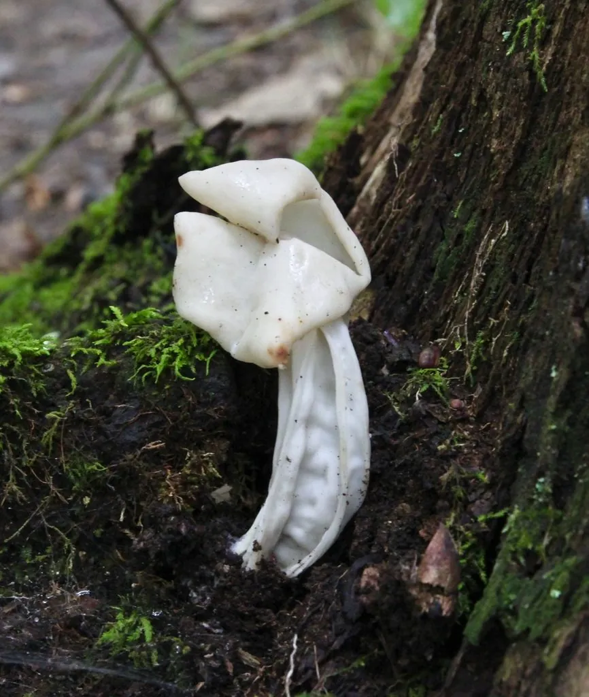

真菌 · 真菌界
马鞍菌 Helvella crispa

马鞍菌的菌盖白色或淡黄色、边缘卷曲成马鞍状，菌柄有深纵沟，是林地中的子囊菌，生食有毒，不可采食。
- 分类
- 门子囊菌门纲盘菌纲目盘菌目科马鞍菌科属马鞍菌属
- 栖息环境
- 阔叶林与针叶林的腐殖质土壤、落叶层，夏秋季单生或群生
- 地理分布
- 北半球温带地区广泛分布，中国北方与西南林区可见
- 保护级别
- 暂无评估（野生真菌）
物种志
马鞍菌是子囊菌门马鞍菌科的真菌，子实体由菌盖和菌柄组成。菌盖白色、乳白色至淡黄色，形状不规则，边缘向上翻卷，中央下凹，整体形似马鞍，直径 2–6 cm。菌柄白色或淡黄色，圆柱形，表面有深纵沟和皱纹，长 3–10 cm。子实层（产孢部分）位于菌盖上面，孢子印白色。
马鞍菌生于阔叶林与针叶林下的腐殖质土壤或落叶层上，夏秋季单生或群生，是林地中常见的子囊菌。它靠分解有机质生长，在森林物质循环中起作用。马鞍菌生食有毒，含有鹿花菌素等毒素，误食可能引起恶心、呕吐等中毒症状；虽然部分资料称煮熟后可食，但风险较高，不建议采食。它的马鞍状菌盖和带纵沟的菌柄形态特殊，是辨识子囊菌的典型例子。
形态与习性
- 菌盖白色至淡黄，马鞍形，直径 2–6 cm
- 菌柄白色，有深纵沟和皱纹
- 孢子印白色
- 子实层位于菌盖上面
- 毒性生食有毒，不建议采食
- 生境林地腐殖质与落叶层
趣味知识
- 马鞍菌的菌盖边缘卷曲，形状像一副马鞍。
- 它的菌柄上有深深的纵向沟纹，是辨认它的重要特征。
- 马鞍菌生食有毒，虽然有人煮熟食用，但不建议采食。